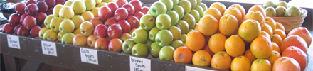

Homegrown Goodness!

Ayers Farm Family Market is a family owned-and-operated business. We have supplied the residents of Huntsville with farm-fresh produce for over 30 years. We strive to give the freshest produce available - some produce is even picked on the very day of its sale. In addition to our fresh produce, we carry a full line of canned fruits and jellies, custom fruit baskets, homemade pies, and much, much more!
Ayers Farm Family Market
2015 Memorial Parkway in Huntsville, Alabama
phone | (256) 533-5667
fax | (256) 533-5028
email | ayersfarm@att.net